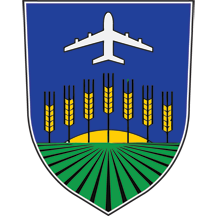

Gradska opština Surčin
Prigradska opština

Opis grba
Gradska opština ima grb.
Grb sačinjava štit standardnog oblika, odnosa strana širine prema visini 4 : 5, uokviren zlatnim obrubom. Polje štita je jedinstveno, bez izraženih podela na manja polja. Sama kompozicija na štitu vizuelno je podeljena tripartitno po visini na tri jednake zone. Prva zona (donja trećina polja štita) predstavljena je naizmeničnim trakama zelene i crne boje, koje se zrakasto spajaju u jednoj tački (centralna perspektiva) koja se nalazi na gornjoj ivici ove zone i predstavlja horizont. Druga zona (srednja trećina polja štita) sadrži nekoliko elemenata. Pozadina koja je zajednička za srednju i gornju trećinu kompozicije štita je plave boje. Drugi element je oblika odsečka kruga, zlatne boje, postavljen na donju ivicu ove zone – horizont i predstavlja prelaz i vezu prve i druge trećine kompozicije. Treći element čini sedam stilizovanih pšeničnih klasova zlatne boje, čija se visina smanjuje ka levoj i desnoj strani štita. Broj klasova predstavlja sedam naselja koji su osnivači opštine i pripadaju opštini Surčin (Surčin, Dobanovci, Jakovo, Boljevci, Progar, Bečmen i Petrovčić). Treća zona (gornja trećina polja štita) sadrži dva elementa. Prvi je pozadina plave boje, koja je zajednička za srednju i gornju trećinu kompozicije na štitu, a drugi stilizovana predstava aviona koji uzleće, bele boje.
Opšte informacije
Opština Surčin usvojila je grb 2007. godine, na osnovu rezultata anonimnog konkursa koji je raspisala. Grb je delo autorskog tima Slobodan i Zoran Stanić.